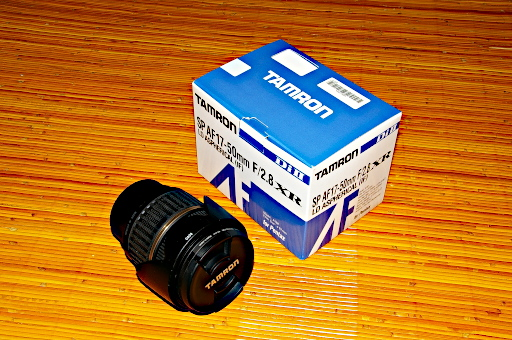
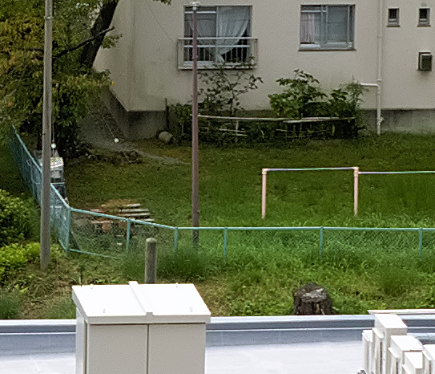

数日前にまだ届かないと書いていたレンズがとうとう本日届きました。注文したのが 16 日なので 1 週間かかったことになります。メーカー在庫がないとのことだったので (つまり在庫切れのためまだ製造中)、これはなかなか異例の速さでの納品かもしれません。QA を含めて 1 ヶ月くらいかかることを覚悟していましたので。

この TAMRON SP AF17-50mm F2.8 XR DiII ですがネットでの評判を見てみるといい評価がある反面、AF での初期不良が多数報告されているので若干不安を感じでいました。なのでレンズが届いて最初にやったのが AF のテストです。ネットの情報では極端な前ピンが多いとのことだったのですが幸いそういうことはありませんでした。
次に知りたかったのはレンズの解像力です。なので自宅から約 100m ほど離れたよく町中にあるグリーンのフェンスを撮ってみて、金網が判別できるかどうかためしてみました。17mm ではさすがにカメラの性能上金網の再現は不可能と思い 50mm までズームして撮影してみました。その結果が下の等倍に拡大した画像になります。スクリーンショットを jpeg で行うと再劣化の恐れがありますので png 画像にしています。

なんとかグリーンフェンスの金網が判別できます。そのことからも価格の割にそこそこの解像力を持ったレンズと言えるのではないでしょうか。しかも f2.8 と明るいですし。今の Pentax *ist DL2 に見合った、いい買い物をしたような気がしています。
ちなみに撮って出しの jpeg 画像の場合はグリーンフェンスの金網は写っていません。ノイズの処理をするときにノイズと一緒に処理されてしまったようです。なので上の画像は RawTherapee でノイズとシャープネスのバランスを見ながら自分で現像したものです。さほど高級でないカメラを使っていて真面目に写真のクオリティを上げたい場合は撮って出しより RAW 現像をお勧めします。いろんな現像上の妥協点も自分で決めることになりますけど。